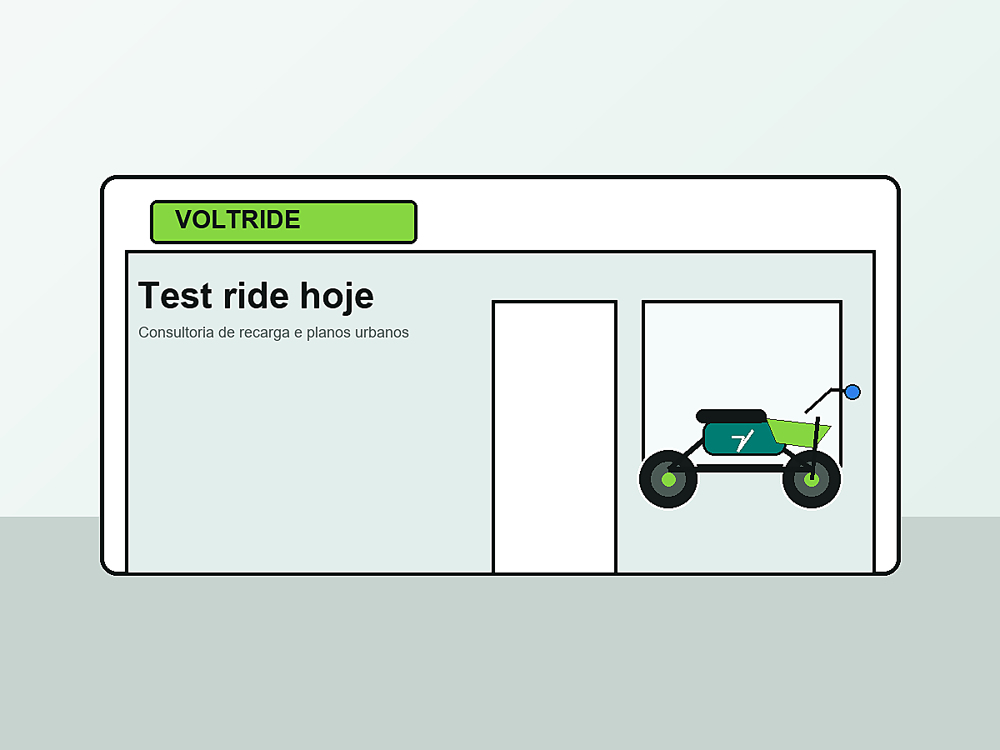

Mapa de autonomia
Simulamos rotas do cliente para indicar autonomia real antes da compra.
Sobre a VoltRide
Percebemos que muitas pessoas queriam mudar para a mobilidade eletrica, mas faltavam orientacao, test ride claro e suporte para recarga em casa.

Historia
A VoltRide comecou em 2024, quando um grupo de apaixonados por tecnologia decidiu comparar motos eletricas em uso real. A conclusao foi simples: o produto era bom, mas a experiencia de compra precisava ser melhor.
Por isso, a loja foi criada com consultoria por rotina. Antes de vender, entendemos distancia diaria, local de recarga, tipo de rua, necessidade de bau e orcamento. Assim, o cliente sai com uma moto que combina com a vida dele.
Diferenciais
Simulamos rotas do cliente para indicar autonomia real antes da compra.
Ajudamos a escolher tomada, carregador e rotina de carga para casa ou trabalho.
Mostramos os custos de revisao preventiva de forma simples e previsivel.
Clientes recebem convites para rotas urbanas, oficinas rapidas e eventos de tecnologia.